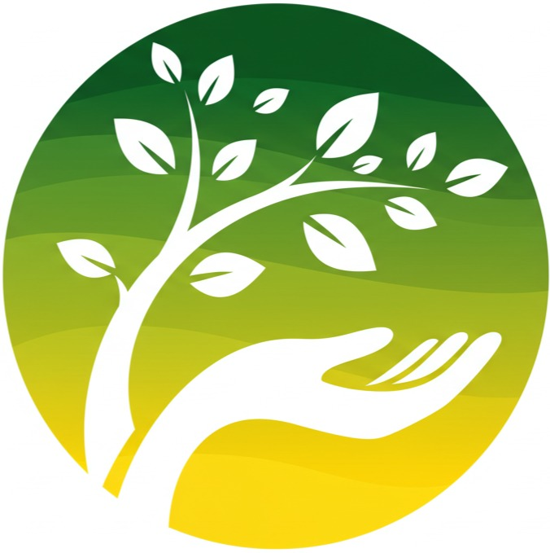

    <script>
        document.addEventListener("DOMContentLoaded", async function () {
            try {
                const [headerRes, footerRes] = await Promise.all([
                    fetch('header.html'),
                    fetch('footer.html')
                ]);

                if (!headerRes.ok || !footerRes.ok) {
                    throw new Error("Erro ao carregar header ou footer.");
                }

                const [headerHTML, footerHTML] = await Promise.all([
                    headerRes.text(),
                    footerRes.text()
                ]);

                document.body.insertAdjacentHTML('afterbegin', headerHTML);
                document.body.insertAdjacentHTML('beforeend', footerHTML);

                initMenu();
            } catch (error) {
                console.error("Erro ao carregar o header/footer:", error);
            }
        });
    </script>

    <!-- O que é a Descarte Certo? -->
    <section class="mission-section" id="sobrenos">
        <div class="mission-container">
            <!-- Cabeçalho da missão -->
            <div class="mission-header">
                <h2 class="mission-title">O que é a Descarte Certo?</h2>
                <div class="mission-divider"></div>
                <p class="mission-subtitle">
                    O <b>Descarte Certo</b> existe para educar e conscientizar sobre o descarte responsável de resíduos. Nosso objetivo é promover práticas sustentáveis, como reciclagem e doação, contribuindo para um mundo mais ecológico e menos poluído.
                </p>
            </div>

            <!-- Grid principal -->
            <div class="mission-grid">
                <div class="mission-left-column">
                    <div class="mission-card">
                        <div class="mission-card-accent"></div>
                        <div class="mission-card-content">
                            <div class="mission-icon">🌎</div>
                            <h3 class="mission-card-title">Impacto Global</h3>
                            <p class="mission-card-text">
                                Nosso impacto global é impulsionado pela <b>redução da poluição</b> e pelo apoio à economia circular, ajudando a preservar recursos naturais e a reduzir a quantidade de resíduos nos aterros.
                            </p>
                        </div>
                    </div>

                    <div class="mission-card">
                        <div class="mission-card-accent"></div>
                        <div class="mission-card-content">
                            <div class="mission-icon">❤️</div>
                            <h3 class="mission-card-title">Compromisso Social</h3>
                            <p class="mission-card-text">
                                O <b>Descarte Certo</b> se compromete a engajar a comunidade, oferecendo informações práticas e promovendo a conscientização sobre o consumo responsável e o descarte correto de resíduos.
                            </p>
                        </div>
                    </div>
                </div>

                <div class="mission-right-column">
                    <div class="mission-feature-card">
                        <div class="mission-circle-bg mission-top-right"></div>
                        <div class="mission-circle-bg mission-bottom-left"></div>
                        <div class="mission-feature-content">
                            <div class="mission-feature-icon">✨</div>
                            <h3 class="mission-feature-title">Por que existimos?</h3>
                            <div class="mission-feature-text">
                                <p>
                                    O <b>Descarte Certo</b> nasceu da necessidade urgente de transformar nossa relação com o meio ambiente. Em um mundo onde cada decisão de descarte impacta nosso futuro, surgimos como um guia para fazer a diferença.
                                </p>
                                <p>
                                    Nossa plataforma une tecnologia e consciência ambiental para criar um movimento de mudança. Não somos apenas um serviço - somos uma comunidade comprometida com um planeta mais limpo e sustentável.
                                </p>
                                <p>
                                    Acreditamos que pequenas mudanças nos hábitos de descarte podem gerar grandes transformações. Por isso, trabalhamos incansavelmente para educar, inspirar e facilitar práticas sustentáveis.
                                </p>
                            </div>
                        </div>
                    </div>
                </div>
            </div>

            <!-- Rodapé da missão -->
            <div class="mission-footer">
                <div class="mission-join-us">
                    <span class="mission-leaf-icon" aria-hidden="true">🍃</span>
                    <a href="https://www.instagram.com/descartecerto010" style="color: #16a34a;">Junte-se a nós nessa missão</a>
                </div>
            </div>

        </div>
    </section>


    <!-- O que o site oferece -->
    <section class="dc-help-section">
        <div class="dc-help-container">
            <h2 class="dc-help-title"> Como podemos ajudar?</h2>
            <p class="dc-help-subtitle">
                Facilitamos sua jornada rumo a um descarte mais consciente com ferramentas
                e recursos desenvolvidos pensando em você.
            </p>

            <div class="dc-features-grid">
                <div class="dc-feature-card dc-feature-chat">
                    <svg xmlns="http://www.w3.org/2000/svg" width="24" height="24" viewBox="0 0 24 24" fill="none" stroke="currentColor" stroke-width="2" stroke-linecap="round" stroke-linejoin="round" class="dc-feature-icon dc-icon-chat" aria-hidden="true">
                        <path d="M21 15a2 2 0 0 1-2 2H8l-5 5V5a2 2 0 0 1 2-2h14a2 2 0 0 1 2 2z"></path>
                    </svg>

                    <h3 class="dc-feature-title">Assistente Virtual</h3>
                    <p class="dc-feature-description dc-chat-description">
                        Tire suas dúvidas em tempo real com nosso chatbot especializado em reciclagem e descarte correto de resíduos.
                    </p>
                </div>

                <div class="dc-feature-card dc-feature-location">
                    <i class="fa-solid fa-map-location-dot" class="dc-feature-icon dc-icon-location" aria-hidden="true"></i>
                    <h3 class="dc-feature-title">Pontos de Coleta</h3>
                    <p class="dc-feature-description dc-location-description">
                        Localize facilmente os pontos de coleta mais próximos de você para cada tipo de material reciclável.
                    </p>
                </div>

                <div class="dc-feature-card dc-feature-content">
                    <i class="fa-solid fa-book-open" class="dc-feature-icon dc-icon-content" aria-hidden="true"></i>
                    <h3 class="dc-feature-title">Conteúdo Educativo</h3>
                    <p class="dc-feature-description dc-content-description">
                        Acesse nossos guias práticos, artigos e blog com informações atualizadas sobre reciclagem e sustentabilidade.
                    </p>
                </div>
            </div>
        </div>
    </section>


    <!-- Guia de Reciclagem -->
    <section class="recycling-guide" id="guiderec">
        <div class="recycling-guide-container">
            <div class="recycling-guide-header">
                <div class="recycling-guide-icon">
                    <svg xmlns="http://www.w3.org/2000/svg" width="24" height="24" viewBox="0 0 24 24" fill="none" stroke="currentColor" stroke-width="2" stroke-linecap="round" stroke-linejoin="round">
                        <path d="M7 19H4.815a1.83 1.83 0 0 1-1.57-.881 1.785 1.785 0 0 1-.004-1.784L7.196 9.5" />
                        <path d="M11 19h8.203a1.83 1.83 0 0 0 1.556-.89 1.784 1.784 0 0 0 0-1.775l-1.226-2.12" />
                        <path d="m14 16-3 3 3 3" />
                        <path d="M8.293 13.596 7.196 9.5 3.1 10.598" />
                        <path d="m9.344 5.811 1.093-1.892A1.83 1.83 0 0 1 11.985 3a1.784 1.784 0 0 1 1.546.888l3.943 6.843" />
                        <path d="m13.378 9.633 4.096 1.098 1.097-4.096" />
                    </svg>
                </div>
                <h2 class="recycling-guide-title"> Guia de Reciclagem </h2>
                <p class="recycling-guide-description">
                    Aprenda como separar e descartar corretamente cada tipo de material.
                    Pequenas ações fazem uma grande diferença para o meio ambiente.
                </p>
            </div>

            <div class="recycling-guide-grid">
                <div class="guide-card">
                    <div class="guide-card-header plastic"></div>
                    <div class="guide-card-content">
                        <h3 class="guide-card-title">Plástico</h3>

                        <div class="guide-section">
                            <h4 class="guide-section-title">O que pode ser reciclado:</h4>
                            <ul class="guide-list">
                                <li class="guide-list-item">Garrafas PET</li>
                                <li class="guide-list-item">Embalagens</li>
                                <li class="guide-list-item">Sacolas</li>
                                <li class="guide-list-item">Utensílios domésticos</li>
                            </ul>
                        </div>

                        <div class="guide-section">
                            <h4 class="guide-section-title">Como reciclar:</h4>
                            <ul class="guide-list">
                                <li class="guide-step"><span class="guide-step-number">1</span>Remova rótulos e tampas</li>
                                <li class="guide-step"><span class="guide-step-number">2</span>Lave para remover resíduos</li>
                                <li class="guide-step"><span class="guide-step-number">3</span>Amasse para ocupar menos espaço</li>
                                <li class="guide-step"><span class="guide-step-number">4</span>Separe por tipo de plástico</li>
                            </ul>
                        </div>

                        <div class="guide-tips">
                            <div class="guide-tips-content">
                                <svg class="guide-tips-icon" xmlns="http://www.w3.org/2000/svg" width="24" height="24" viewBox="0 0 24 24" fill="none" stroke="currentColor" stroke-width="2" stroke-linecap="round" stroke-linejoin="round">
                                    <circle cx="12" cy="12" r="10" />
                                    <path d="M12 16v-4" />
                                    <path d="M12 8h.01" />
                                </svg>
                                <p class="guide-tips-text">Lave e seque antes de descartar. Separe por tipo de plástico quando possível.</p>
                            </div>
                        </div>
                    </div>
                </div>

                <div class="guide-card">
                    <div class="guide-card-header paper"></div>
                    <div class="guide-card-content">
                        <h3 class="guide-card-title">Papel</h3>

                        <div class="guide-section">
                            <h4 class="guide-section-title">O que pode ser reciclado:</h4>
                            <ul class="guide-list">
                                <li class="guide-list-item">Jornais</li>
                                <li class="guide-list-item">Revistas</li>
                                <li class="guide-list-item">Papelão</li>
                                <li class="guide-list-item">Folhas de papel</li>
                            </ul>
                        </div>

                        <div class="guide-section">
                            <h4 class="guide-section-title">Como reciclar:</h4>
                            <ul class="guide-list">
                                <li class="guide-step"><span class="guide-step-number">1</span>Retire grampos e clipes</li>
                                <li class="guide-step"><span class="guide-step-number">2</span>Mantenha seco e limpo</li>
                                <li class="guide-step"><span class="guide-step-number">3</span>Dobre papelões</li>
                                <li class="guide-step"><span class="guide-step-number">4</span>Separe por tipo de papel</li>
                            </ul>
                        </div>

                        <div class="guide-tips">
                            <div class="guide-tips-content">
                                <svg class="guide-tips-icon" xmlns="http://www.w3.org/2000/svg" width="24" height="24" viewBox="0 0 24 24" fill="none" stroke="currentColor" stroke-width="2" stroke-linecap="round" stroke-linejoin="round">
                                    <circle cx="12" cy="12" r="10" />
                                    <path d="M12 16v-4" />
                                    <path d="M12 8h.01" />
                                </svg>
                                <p class="guide-tips-text">Mantenha seco e limpo. Retire grampos e fitas adesivas.</p>
                            </div>
                        </div>
                    </div>
                </div>

                <div class="guide-card">
                    <div class="guide-card-header metal"></div>
                    <div class="guide-card-content">
                        <h3 class="guide-card-title">Metal</h3>

                        <div class="guide-section">
                            <h4 class="guide-section-title">O que pode ser reciclado:</h4>
                            <ul class="guide-list">
                                <li class="guide-list-item">Latas de alumínio</li>
                                <li class="guide-list-item">Tampas</li>
                                <li class="guide-list-item">Panelas</li>
                                <li class="guide-list-item">Pregos</li>
                            </ul>
                        </div>

                        <div class="guide-section">
                            <h4 class="guide-section-title">Como reciclar:</h4>
                            <ul class="guide-list">
                                <li class="guide-step"><span class="guide-step-number">1</span>Lave para remover resíduos</li>
                                <li class="guide-step"><span class="guide-step-number">2</span>Amasse latas vazias</li>
                                <li class="guide-step"><span class="guide-step-number">3</span>Separe por tipo de metal</li>
                                <li class="guide-step"><span class="guide-step-number">4</span>Retire rótulos de papel</li>
                            </ul>
                        </div>

                        <div class="guide-tips">
                            <div class="guide-tips-content">
                                <svg class="guide-tips-icon" xmlns="http://www.w3.org/2000/svg" width="24" height="24" viewBox="0 0 24 24" fill="none" stroke="currentColor" stroke-width="2" stroke-linecap="round" stroke-linejoin="round">
                                    <circle cx="12" cy="12" r="10" />
                                    <path d="M12 16v-4" />
                                    <path d="M12 8h.01" />
                                </svg>
                                <p class="guide-tips-text">Limpe bem antes de descartar. Separe por tipo de metal.</p>
                            </div>
                        </div>
                    </div>
                </div>

                <div class="guide-card">
                    <div class="guide-card-header glass"></div>
                    <div class="guide-card-content">
                        <h3 class="guide-card-title">Vidro</h3>

                        <div class="guide-section">
                            <h4 class="guide-section-title">O que pode ser reciclado:</h4>
                            <ul class="guide-list">
                                <li class="guide-list-item">Garrafas</li>
                                <li class="guide-list-item">Potes</li>
                                <li class="guide-list-item">Frascos</li>
                                <li class="guide-list-item">Copos</li>
                            </ul>
                        </div>

                        <div class="guide-section">
                            <h4 class="guide-section-title">Como reciclar:</h4>
                            <ul class="guide-list">
                                <li class="guide-step"><span class="guide-step-number">1</span>Lave bem o material</li>
                                <li class="guide-step"><span class="guide-step-number">2</span>Remova tampas e rótulos</li>
                                <li class="guide-step"><span class="guide-step-number">3</span>Separe por cor</li>
                                <li class="guide-step"><span class="guide-step-number">4</span>Embale vidros quebrados</li>
                            </ul>
                        </div>

                        <div class="guide-tips">
                            <div class="guide-tips-content">
                                <svg class="guide-tips-icon" xmlns="http://www.w3.org/2000/svg" width="24" height="24" viewBox="0 0 24 24" fill="none" stroke="currentColor" stroke-width="2" stroke-linecap="round" stroke-linejoin="round">
                                    <circle cx="12" cy="12" r="10" />
                                    <path d="M12 16v-4" />
                                    <path d="M12 8h.01" />
                                </svg>
                                <p class="guide-tips-text">Lave e remova rótulos. Cuidado com vidros quebrados.</p>
                            </div>
                        </div>
                    </div>
                </div>
            </div>
        </div>
    </section>


    <section class="descartar-section">
        <div class="descartar-container">
            <div class="descartar-icon">
                <svg xmlns="http://www.w3.org/2000/svg" viewBox="0 0 512 512" width="50" height="50">
                    <path d="M256 512A256 256 0 1 0 256 0a256 256 0 1 0 0 512zM216 336l24 0 0-64-24 0c-13.3 0-24-10.7-24-24s10.7-24 24-24l48 0c13.3 0 24 10.7 24 24l0 88 8 0c13.3 0 24 10.7 24 24s-10.7 24-24 24l-80 0c-13.3 0-24-10.7-24-24s10.7-24 24-24zm40-208a32 32 0 1 1 0 64 32 32 0 1 1 0-64z" />
                </svg>
            </div>
            <h2 class="descartar-title">Onde descartar ?</h2>
            <p class="descartar-description">
                Após separar seus materiais recicláveis, é hora de destinar corretamente para uma cooperativa de reciclagem, ou catador autônomo.
            </p>
            <p class="descartar-description">
                Com a ajuda do nosso <strong>FAQ ChatBot</strong>, você pode tirar todas as suas dúvidas sobre reciclagem e encontrar pontos de coleta e cooperativas mais próximas.
                <strong class="descartar-highlight">Basta clicar em conversar!</strong>
            </p>

            <!-- DcBot -->
            <div class="descartar-chatbot-container">
                <div class="descartar-chatbot">
                    
                    <h3 class="descartar-chatbot-name">DCbot</h3>
                    <button type="button" class="descartar-chatbot-button">Conversar</button>
                </div>
            </div>
        </div>
    </section>

    <script type="module" src="https://unpkg.com/ionicons@5.5.2/dist/ionicons/ionicons.esm.js"></script>
    <script nomodule src="https://unpkg.com/ionicons@5.5.2/dist/ionicons/ionicons.js"></script>
</body>


<script src="./assets/js/menu.js" defer></script>
<script src="./assets/js/chat.js" defer></script>

<script type="module" src="https://unpkg.com/ionicons@5.5.2/dist/ionicons/ionicons.esm.js"></script>
<script nomodule src="https://unpkg.com/ionicons@5.5.2/dist/ionicons/ionicons.js"></script>
</html>
